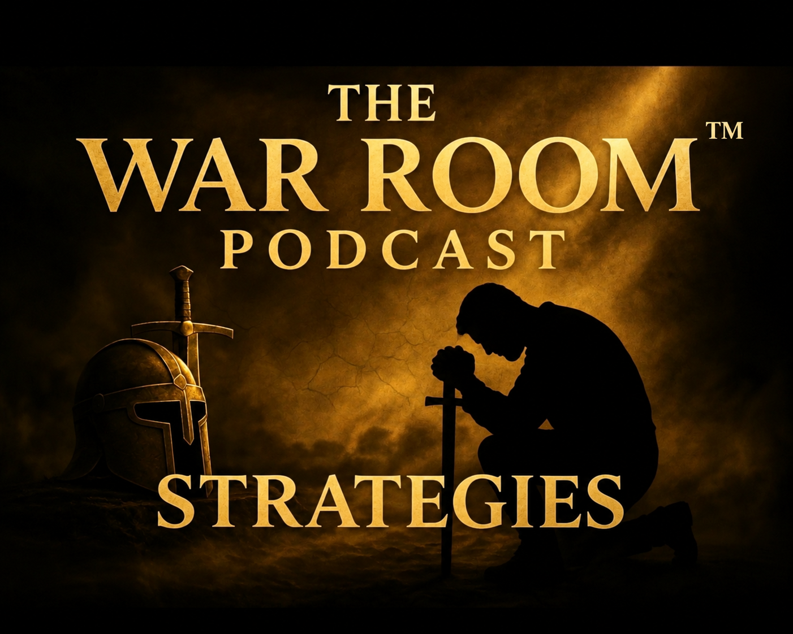

Bienvenidos a The War Room
«No es a quién conoces… ¡sino cómo lo conoces!»
🎙️ Episodios y enseñanzas
Escucha y mira nuestros mensajes, estudios bíblicos y conversaciones sobre la fe y la guerra espiritual.
Visitar nuestro canal de YouTube →Los videos se abren en YouTube. Próximamente: catálogo de episodios dentro de la app.
📖 Palabra de Dios
«Vestíos de toda la armadura de Dios, para que podáis estar firmes contra las asechanzas del diablo.»
Efesios 6:11 · Reina-Valera 1960
Permanece firme en Cristo, persevera en oración y busca cada día su presencia.
📲 Comparte el mensaje
Ayúdanos a llevar la Palabra a más hogares. Suscríbete al canal y comparte los episodios.
Suscribirse y compartir →